Operator and developer manual: the touchscreen app, running a test, calibration, the DIC camera, and how the code fits together.
The tester pulls a specimen apart at a constant rate and records the load. Two stepper motors (Stepperonline 23HS30-3004S, each on a DM542T V4.0 driver) turn two 5 mm-lead ball screws that move the crosshead in lockstep. A load cell on a SparkFun HX711 amplifier measures the force, and a Basler camera films the specimen for DIC (digital image correlation).
The work is split between two computers. The Arduino Mega 2560 does everything that needs exact timing: it steps both motors from a hardware timer, reads the load cell, and stops the motors by itself on overload, specimen break, travel limits or a silent host. The Raspberry Pi 5 runs the Python app vsbc: the touchscreen GUI, test procedures, calibration wizards, the camera, and all the files.
Everything the operator touches is in the GUI. The Mega's firmware also works on its own from the Arduino IDE Serial Monitor (Appendix B), which is useful for bring-up. On a PC without hardware, vsbc gui --sim runs the whole app against a simulated Mega and camera that behave like the real ones.
sudo apt update && sudo apt install -y git
git clone https://github.com/Aidan-Jones/VSBC_driver.git
cd VSBC_driver
bash scripts/install_pi.sh # packages, Python env, arduino-cli, desktop launchervsbc flash # compile and upload the firmware to the Mega
vsbc loadcell # raw counts and sample rate for 5 s
vsbc # the GUI (also in the desktop menu as "VSBC Tensile Tester")bash scripts/install_pi.sh --camera
vsbc camera check # frame rate, dropped frames, disk speed, a small pyvale DICTo update later: git pull, run install_pi.sh again, and vsbc flash if the app says the firmware changed. config.toml, the Python environments and Outputs/ are not in git, so updating leaves them alone. If the shell says vsbc: command not found, the install script stopped at an error: run it again and read its last lines.
py -3.12 -m venv $HOME\.venvs\vsbc # Windows; keep it outside OneDrive
& $HOME\.venvs\vsbc\Scripts\Activate.ps1
pip install -e ".[gui,dev]"
vsbc gui --sim # the whole app against the simulatorOn macOS or Linux: python3 -m venv ~/.venvs/vsbc && source ~/.venvs/vsbc/bin/activate, then the same two commands.
With a Mega plugged in, leave out --sim. Python 3.11 or newer is needed. Keep Outputs/ off OneDrive: a camera recording writes gigabytes.
The window has a bar along the top, live readouts, and two sets of tabs: what you look at on the left, and what you do on the right, in the order of the work.
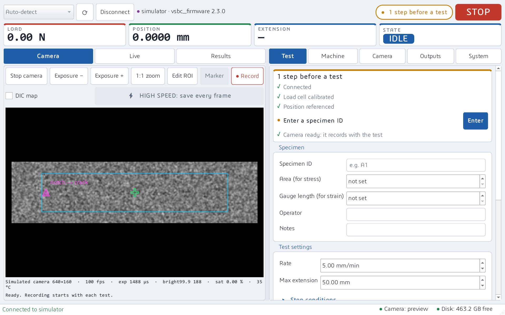
1 2 3 4 5 6 7 8 9 10Warnings (load cell not found, not calibrated, position not referenced, storage low…) appear in a banner under the readouts. × hides them until they happen again. Red ones (connection lost, disk almost full, camera stopped recording) stay until their cause is gone. A greyed-out button explains why in its tool tip, and under Start test the reason is spelled out.
| Tab | What it is for |
|---|---|
| Test | The checklist, the specimen (ID, area, gauge length, operator, notes), test settings, Start test, then the results. Section 4. |
| Machine | Jog, Position reference, ▸ Calibration and limits, ▸ Service: one motor only. Section 5. |
| Camera | What records with each test, what runs after it, and ▸ Advanced (time sync, DIC parameters, script check). Section 6. |
| Outputs | Disk space, every test and recording, View results, Copy to a USB drive, delete tests or only their images, upload zips. Section 7. |
| System | Display (theme, units), Console (raw serial terminal and event log), Firmware (version check, compile and upload). |
Rarely used settings are folded under ▸ headings; tap one to open it. The app remembers which you leave open, the theme and units, the last test settings and operator, the next specimen ID, the window layout, and the last tab. All of this lives in Outputs/preferences.json.
Touch screen. Drag a page anywhere, even on a button, to scroll it. A tap, or a press held still, still clicks. Plots and the camera view keep their own drag (pan, zoom, ROI). In the Outputs list a tap adds a test to the selection. This turns on by itself when a touch screen is found (touch_scroll under [gui] forces it). The GUI sizes its text to the screen: 13 px on 800×480 and 1024×600 panels, 11 pt on 1280×800. scale under [gui] overrides that.
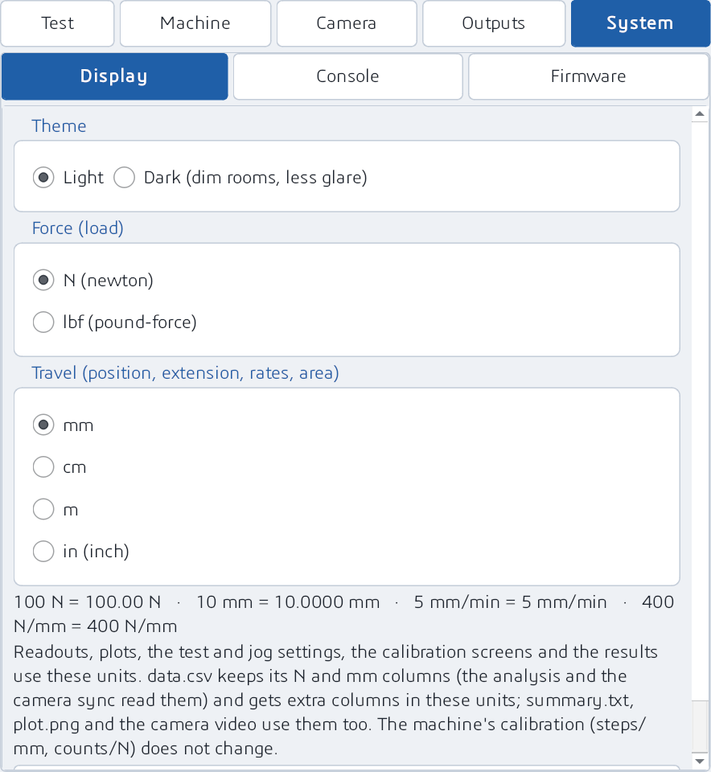
Display">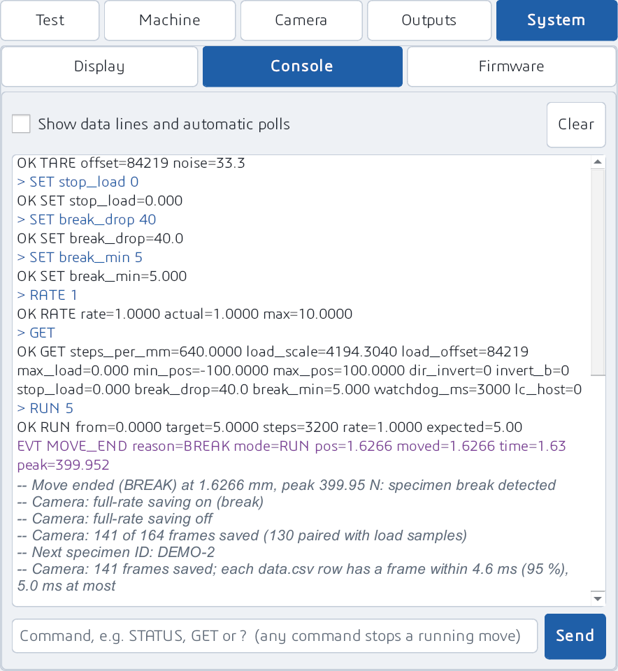
Console">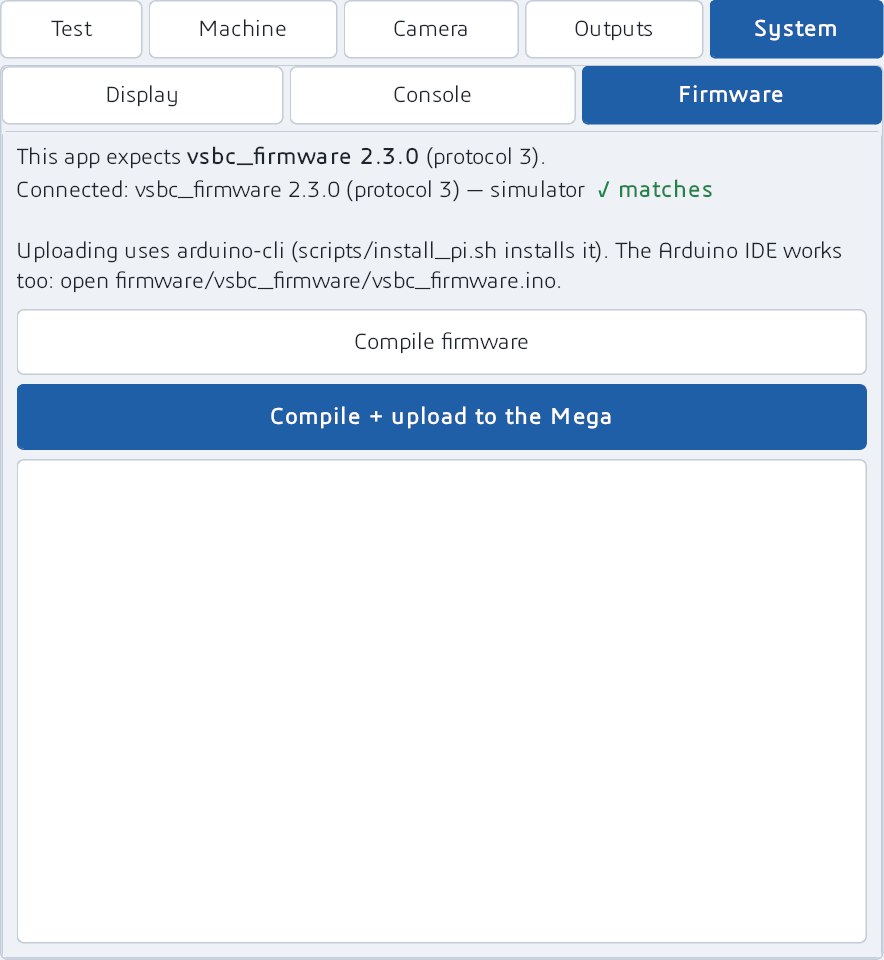
Firmware">The Ready to test list at the top of the Test tab walks you through the setup in order; Start test stays greyed out until every required step is done.
Mount the specimen and jog to take up slack. Then check the test settings:
| Setting | Meaning |
|---|---|
| Rate | Crosshead speed, 0.12 to 600 mm/min (ASTM D638 uses 5 or 50). |
| Max extension | The test stops here at the latest. Start position + max extension must be inside the travel limits. |
| Area, Gauge length | Optional. With them, the data and results include stress, strain, UTS and apparent modulus. |
| ▸ Stop conditions | Stop at load (optional); Break: drop from peak (default 40 %, two samples in a row); Break: min peak (arms break detection only above this load); tare before starting; return afterwards. The folded header lists the current values. |
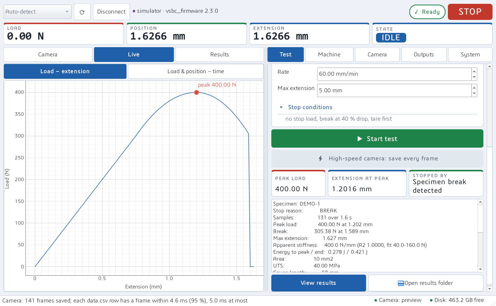
Press Start test. The app checks the setup and lists anything that stops the test (Appendix F). It then tares (if selected) and sends the per-test limits to the Mega. With the camera on, it shows a hands-off countdown and takes the reference frame. Then the constant-rate move starts.
What ends a test: a detected break, the stop load, the max extension, STOP, or a safety stop (overload, load cell lost, the app silent for 3 s). The Mega decides, not the Pi. The camera stops with the test, and if the camera fails, the test stops too.
Afterwards the Test tab shows Peak load, Extension at peak and Stopped by above the summary, with View results (the Results tab) and Open results folder. The files go to a new folder under Outputs/tests/<date>/. With the camera, the video and DIC follow in the background, shown in the status bar.
Stiffness is fitted between 10 % and 40 % of the peak load. Displacement comes from the motor steps, so it includes the stretch of the frame and grips: stiffness and modulus are apparent values. DIC strain from the camera does not have this problem. vsbc analyze <folder> --fit 0.2 0.5 recalculates with another window.
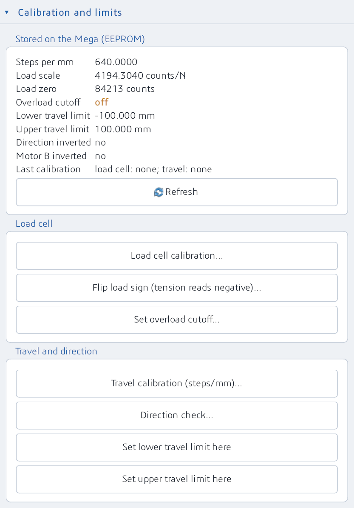
All calibration is stored in the Mega's EEPROM, so the Mega is the source of truth and the same calibration works from the Pi and from the Arduino IDE. Each calibration done in the app also writes a timestamped record to Outputs/calibration/, and every test's meta.json includes the calibration in use. Everything is under Machine › Calibration and limits. Do it in this order the first time:
dir_invert and saves it. You can also check motor B alone, but only with the screws uncoupled.steps_per_mm = old × commanded ÷ measured. An error above 5 % is flagged as a fault to fix, not calibrate away: most likely the microstep DIP switches. Set the position reference again afterwards.capacity_n.max_load). Any move stops when |load| reaches it while rising. Set it below the load cell's and the frame's rating.If tension later reads negative, Flip load sign fixes it without recalibrating. The app warns during a test when it sees this, because break detection can't arm.
From the command line: vsbc calibrate load (add --compression for weights placed on the load cell) and vsbc calibrate travel. With the HX711 wired to the Pi, vsbc calibrate load --no-mega calibrates with no Mega attached; the result is stored on the Mega at the next connection.
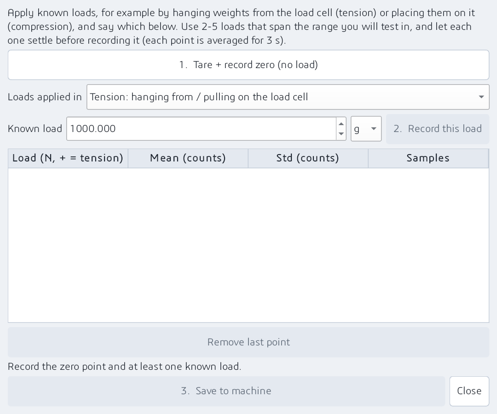
The camera code runs as a separate process in its own Python environment (.venv-camera). Its settings (exposure, crop, buffer, DIC parameters) are the USER SETTINGS at the top of camera/capture_dic_live.py; the Camera tab on the right shows them and adds what records with each test.
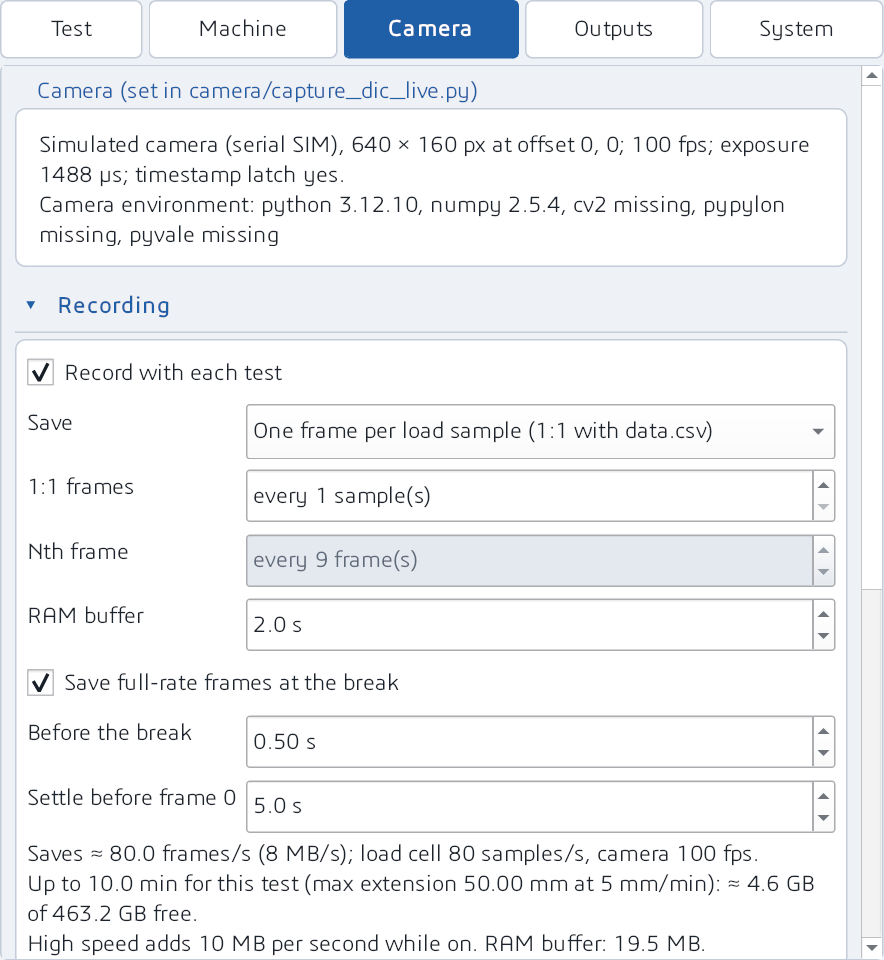
In the left Camera tab, press Edit ROI:
Use 1:1 zoom to check focus and Exposure ± to adjust (watch sat and bright99.9 under the image).
The HX711 gives 10 load readings per second as shipped (80 with its RATE jumper cut). The camera runs at its full rate (about 478 fps with the 400-row crop) and keeps the last few seconds in RAM.
data.csv row has its own image.time_s on data.csv's clock, and video.mp4 plays in real time from time_s = 0.After the test, at low priority (paused while the next test records): sync → video → DIC → strain and plots → both crack trackers. Choose which run under After each test. ● Record makes a recording without a test.
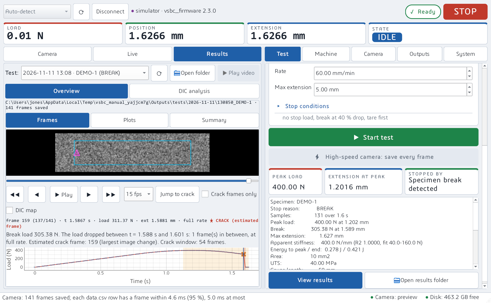
View results (Test or Outputs tab) opens a test in Results › Overview. Scrub with the slider, ◀ / ▶ (one frame), ◀◀ / ▶▶ (ten), or Play. Click the curve to jump there. The crack interval is the frames between the last load reading before the drop and the next one: about 48 frames at 10 readings/s. Crack frames only loops it with 50 frames either side, and Jump to crack goes to the frame that changes most inside the ROI. The Plots and Summary sub-tabs show plot.png, the scripts' plots, and the frame pairing.
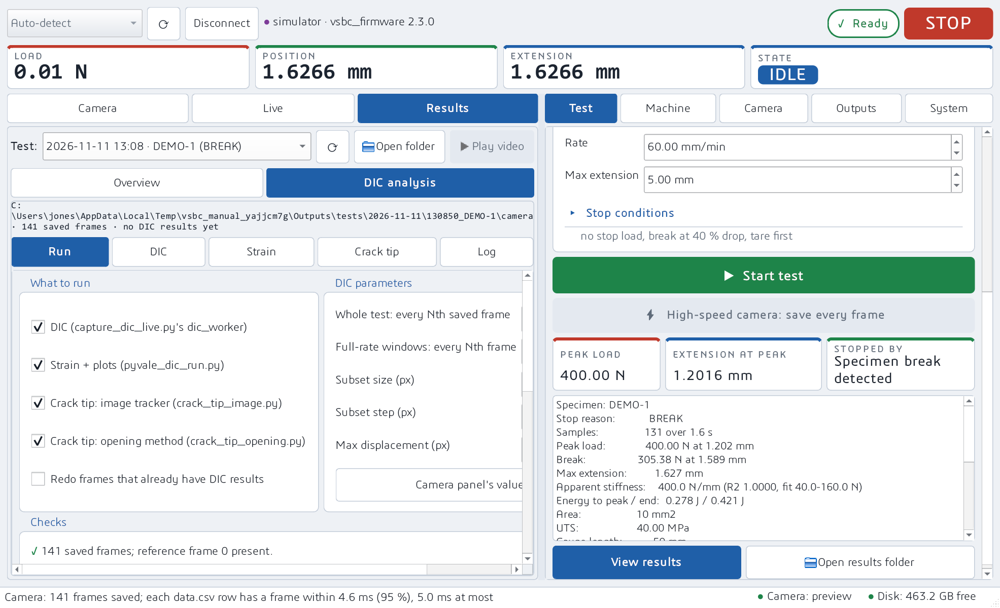
Results › DIC analysis runs DIC on the test chosen in the picker. In Run, tick DIC, strain and plots, and the two crack trackers; the parameters start from the Camera tab's values. A checklist runs first: frames and reference frame 0, ROI and seed, notch tip, sync, frame counts, the camera scripts, pyvale and OpenCV in the camera environment, disk space. Run is enabled only when nothing is ✗.
Old trials without an ROI: Draw ROI on a frame… draws one on the test's own frame 0 (saved in that test's camera/roi.npz, not the Camera tab's). The DIC, Strain and Crack tip sub-tabs show the results; in Crack tip, click the frame to mark the tip by hand. Process a folder… runs the after-test steps on any folder, and so does vsbc camera process <folder>.
Everything goes into Outputs/ (change it with output_dir in config.toml). One folder per test:
Outputs/tests/2026-09-29/153012_A1/
├── data.csv every sample: time, position, extension, load, ... (Appendix E)
├── summary.txt the results, readable (summary.json: the same in N and mm)
├── plot.png load vs extension (+ stress vs strain with area and gauge length)
├── meta.json settings, firmware, calibration, start/end, stop reason
├── video.mp4 with the camera: playback time = data.csv time_s
└── camera/ with the camera: frames, frames.csv, DIC results, plots, crack tips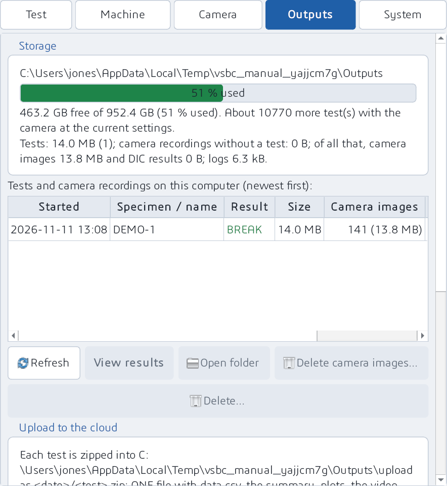
Outputs/upload/<date>/<test>.zip: everything except the routine camera frames. Upload that folder, not the test folders (thousands of files). Make upload zips in the Outputs tab remakes them.The banner and the Start-test messages say what is wrong; this table says what to do. Appendix F lists every message.
| You see | Do this |
|---|---|
| "No answer from vsbc_firmware", or a protocol mismatch at connect | The Mega has other firmware (a legacy sketch) or an old version. Upload from System › Firmware or vsbc flash. |
| "Load cell not responding" / "Load cell stopped responding" | Check the HX711 wiring. vsbc loadcell (or ? in the Serial Monitor) says which wire: no conversions (power, GND or DAT) or readings not answered (CLK or VDD). |
| "Load cell not calibrated" | Machine › Calibration and limits › Load cell calibration… (section 5). |
| "Position not referenced" | Jog to the reference and Set current position to 0. Needed after every connect. |
| "The Mega reset: set the position reference again" | The Mega restarted (USB glitch, power). Set the reference again before moving far. |
| "Tension is reading negative…" | Flip load sign under Calibration and limits. Break detection can't arm until it's fixed. |
Load-cell sample rate differs from rate_hz | Set rate_hz under [loadcell] to 10 (as shipped) or 80 (RATE jumper cut). |
| "Start position + max extension passes the upper travel limit" | Lower Max extension, jog back, or raise the upper travel limit. |
| "The camera is not running … this test is NOT recorded" | Press Start camera in the left Camera tab, or start anyway without video. |
| "No usable ROI…" / "No notch tip set" | Edit ROI. Without them, frames are recorded but DIC or the crack trackers are skipped. |
| "Not enough disk space for the camera" | Free space in Outputs, save fewer frames (Camera tab), or lower the max extension. |
| Last move stopped: OVERLOAD, LOADCELL, WATCHDOG | A safety stop by the Mega (Appendix G). Find the cause before the next move. |
| Crosshead buzzes, grinds, or travels short | The motor is stalling (nothing detects this). Lower the rate or raise the driver current. |
multiprocessing.connection socket.| Path | What it holds |
|---|---|
vsbc/ | machine.py (high-level, thread-safe API), link.py (port discovery, reader thread, command/reply), protocol.py (protocol v3 lines), procedures.py (pull-to-failure runner and its preflight), analysis.py (results from extension and load), recorder.py (one folder per test), calibration.py (maths and records), plotting.py, sim.py (simulated Mega), loadcell_pi.py (HX711 on the Pi), storage.py, share.py (upload zips), units.py, config.py, firmware.py (arduino-cli), cli.py, logs.py |
vsbc/gui/ | app.py (main window, top bar, readouts, tabs), panels.py (Test, Jog, Console, Firmware), machine_panel.py (Machine and System containers), calibration_panel.py, wizards.py (load-cell and travel dialogs), camera_view.py / camera_panel.py, results_view.py, dic_view.py, roi_dialog.py, outputs_panel.py, units_panel.py, plots.py, readiness.py (the checklist), common.py (theme, scaling, touch scrolling) |
vsbc/camera/ | The app's side of the camera: client.py (starts and talks to the camera process), service.py (the camera process itself), simcam.py, sync.py (one clock for data, frames and video), postprocess.py / jobs.py (after-test queue), results.py / dic_results.py (read back for the GUI), roi.py, scripts.py, tiff.py |
camera/ | The swappable DIC scripts: capture_dic_live.py (USER SETTINGS, configure_camera(), dic_worker()), pyvale_dic_run.py, the two crack trackers, two viewers. Keep the interface in camera/README.md and drop new versions in. |
firmware/ | vsbc_firmware/: motion.* (Timer1 step engine), tester.* (samples, safety, telemetry), commands.* (parser), settings.* (EEPROM), loadcell_hx711.cpp, config.h. legacy/: the two old motion-only sketches. |
scripts/, tests/, docs/ | Pi installer and desktop launcher · the pytest suite · protocol.md, hardware.md and this manual's source (docs/manual/) |
link.py parses every line from the Mega and hands it to listeners; machine.py adds a ping thread that keeps the Mega's 3 s watchdog fed. The GUI's listener only puts messages in a queue; a Qt timer (refresh_hz, 25/s) drains it and updates the widgets. Never touch Qt widgets from another thread: use MainWindow.post() or run_async().run_async(), with a callback on the GUI thread..venv-camera, so pyvale's PyQt6, OpenCV's Qt and NumPy 2 never load into the GUI. Post-processing jobs are separate processes too, one at a time, at low priority.| Kind of setting | Where | Changed by |
|---|---|---|
| App settings (port, output folder, load-cell wiring, defaults, GUI, storage, camera workflow) | config.toml (Appendix C) | Editing the file |
| Machine calibration (steps/mm, load scale and zero, limits, overload cutoff, directions) | Mega EEPROM | Machine tab, or SET + SAVE |
| Camera (exposure, crop, frame rate, RAM buffer, DIC parameters) | camera/capture_dic_live.py | Editing USER SETTINGS; Reload scripts |
Firmware constants (pins, STEPS_PER_REV, screw lead, speed cap, HX711 pins) | firmware/vsbc_firmware/config.h | Editing, then upload again |
| Remembered GUI choices (theme, units, layout, last test settings) | Outputs/preferences.json | The GUI, automatically |
A protocol change is three changes: the firmware (commands.cpp, tester.cpp, motion.cpp), the simulator vsbc/sim.py, and docs/protocol.md, together. The tests run against the simulator. The protocol version must match exactly (the app refuses to connect otherwise); a firmware version mismatch only warns.
Never import cv2, pyvale or pypylon in the GUI process. The camera process and the post-processing jobs import only the standard library and NumPy on the app side.
Changing the microstep setting means changing STEPS_PER_REV in config.h, STEPS_PER_REV in vsbc/sim.py and FIRMWARE_PULSES_PER_REV in vsbc/calibration.py, plus the DIP switches on both drivers.
pip install -e ".[gui,dev]"
pytest # the whole suite, against the simulators
vsbc gui --sim # try GUI changes without hardware
vsbc flash --compile-only # compile the firmware (needs arduino-cli)
python docs/manual/build_manual.py # rebuild this manual (screenshots + PDF)The GUI tests drive the real window offscreen (QT_QPA_PLATFORM=offscreen). The camera tests and --sim run the camera process with this environment's Python and the simulated camera; with opencv-python-headless installed they also make the video.
Global options: --config FILE, --output-dir DIR, -v (debug logging), --version. Commands that talk to the machine also take --port (default: auto-detect), --sim and --loadcell pi|mega. Values are in mm and N; printed results use the display units. vsbc <command> --help lists everything; python -m vsbc works too.
| Command | What it does |
|---|---|
vsbc, vsbc gui [--fullscreen] | Start the GUI. |
vsbc terminal | Serial terminal with a session log. Sends STOP on exit. |
vsbc test --specimen ID[--rate MM_MIN] [--max-ext MM] [--stop-load N] [--break-drop %] [--break-min N] [--area MM2] [--gauge MM] [--no-tare] [--return] [--operator ..] [--notes ..] [-y] | Pull-to-failure test without the GUI (e.g. over SSH), with a live text readout. Ctrl+C stops it. -y starts without confirming warnings. |
vsbc calibrate load|travel [--compression] [--no-mega] | Calibration with text prompts. --no-mega: load cell on the Pi alone; stored on the Mega at the next connection (kept in Outputs/pending_load_calibration.json until then). |
vsbc analyze PATH [--fit LO HI] [--break-drop %] [--break-min N] [--area MM2] [--gauge MM] | Recalculate a test's summary and plot. --fit: stiffness window as fractions of peak (default 0.10 0.40). |
vsbc camera check [--sim] | Frame rate and dropped frames, disk write speed, the camera scripts, and a small synthetic pyvale DIC. Run it on the Pi before the first real test. |
vsbc camera process FOLDER [--only video,dic,strain,crack_image,crack_opening] [--load-delay-ms MS] | Sync, video, DIC, strain and crack tips for a test folder or a recording, without the GUI. |
vsbc flash [--port ..] [--cli PATH] [--compile-only] | Compile and upload the firmware with arduino-cli. |
vsbc ports | List serial ports. |
vsbc loadcell [--seconds 5] | Check the load cell where config.toml says it is wired: raw counts, sample rate, and why it isn't responding if so. With source = "pi" it reads the GPIO pins (no Mega needed) and reports discarded readings. |
USB serial at 115200 baud, 8N1, ASCII lines (any line ending; a line typed without one is accepted after 100 ms). Opening the port resets the Mega: wait for EVT READY. The full contract is docs/protocol.md (protocol v3, firmware 2.3.0). For load readings without the Pi, the HX711 must be wired to the Mega.
| Starts with | Meaning |
|---|---|
OK <CMD> [key=value ...] | Command succeeded. Every command except LC gets exactly one OK or ERR. |
ERR <CMD> <CODE> <message> | Command failed (codes below). |
EVT <NAME> [key=value ...] | Something happened on its own: READY, MOVE_END, LOADCELL state=OK|LOST, OVERLOAD, INPUT. |
D <t_ms> <pos_mm> <load_N> <raw> <state> | One sample, e.g. D 123456.789 12.3450 87.512 1419842 R. Mega clock to 1 µs; state I idle, M manual move, R test run. |
# <text> | Human-readable text; hosts ignore it. |
Case-insensitive; a one-letter alias can be followed directly by its number (v0.5, m-5). During a move, any command not marked "any time" stops it and gets ERR … BUSY motion stopped.
| Command | Alias | Any time | Action |
|---|---|---|---|
HELP | ? | yes | Command list and current state (and why the load cell is down, if it is) |
ID · STATUS · GET | – · S · – | yes | Firmware name/version · current state · every setting |
PING · STREAM ON|OFF | yes | Feed the watchdog · a data line per load sample (OFF: every 0.5 s while moving) | |
STOP | X | yes | Stop; the move ends with EVT MOVE_END reason=STOP |
LC <raw> | yes | A load reading from the host (only with lc_host 1); no reply | |
RATE <mm/s> | V | Rate for all moves, 0.002 to 10 mm/s (5 mm/min = 0.0833) | |
MOVE <±mm> · GOTO <mm> · HOME | M · G · H | Relative move (+ = tension) · absolute move · go to 0 | |
RUN <±mm> | R | Test move: break detection and stop load armed. Needs a working, calibrated load cell, a reference and both motors. | |
ZERO [mm] | Z | Set the current position (default 0) and mark it referenced | |
TARE · CAL <N> | T · – | Zero the load cell · span calibration with a known load (each averages 2 s) | |
SET <key> <value> · SAVE · DEFAULTS | Change a setting in RAM · store to EEPROM · restore defaults in RAM | ||
MOTORS AB|A|B | Service mode: pulse one driver only (clears "referenced") |
UNKNOWN | Unknown command |
ARG | Bad or missing argument, unknown key |
RANGE | Value out of range |
LIMIT | Outside the soft travel limits, or a limit switch |
BUSY | A move was running (now stopped), or TARE/CAL averaging |
NOLOAD | Load cell not responding |
UNCAL | Load cell not calibrated |
NOREF | Position not referenced |
ESTOP | E-stop input active (if fitted) |
MOVE_END reason=DONE | Reached the target |
STOP | STOP, or another command arrived |
BREAK | Load fell break_drop % below peak on two samples |
LOAD | |load| reached stop_load |
OVERLOAD | |load| reached max_load while rising, or ADC saturated |
LOADCELL | No load reading for 0.5 s during a RUN |
WATCHDOG | No line from the host for watchdog_ms |
TIMEOUT | Move took its expected time + 1 s |
LIMIT / ESTOP | Limit switch / E-stop input (if fitted) |
GET, SET)| Key | Default | Meaning |
|---|---|---|
| Saved by SAVE (EEPROM): machine calibration | ||
steps_per_mm | 640 | Crosshead steps per mm (3200 steps/rev ÷ 5 mm lead); 320–1280 |
load_scale / load_offset | 0 / 0 | Counts per newton (0 = not calibrated; negative is fine) / counts at zero load |
max_load | 0 | N; any move stops when |load| reaches it while rising (0 = off) |
min_pos / max_pos | −100 / 100 | mm; soft travel limits from the reference zero |
dir_invert / invert_b | 0 / 0 | Swap which DIR level is + (tension) / motor B turns opposite to A |
| Not saved: set by the host before each RUN or at connect | ||
stop_load, break_drop, break_min | 0 | Stop load (N), break threshold (%), peak needed before break detection arms (N); 0 = off |
watchdog_ms | 0 | Stop a move after this long without a line; the app sets 3000 and pings every 0.5 s |
lc_host | 0 | 0 = the Mega's own HX711; 1 = readings sent by the host with LC |
Safety checks use the median of the last three samples, so one bad sample cannot trigger a stop. Single-point calibration by hand: TARE, hang a known weight, CAL <newtons>, SAVE.
Optional. Copy config.example.toml to config.toml in the repository folder, or to ~/.config/vsbc/config.toml. The values below are the defaults. Machine calibration is not here: it is on the Mega (Machine › Calibration and limits).
| Key | Default | Meaning |
|---|---|---|
output_dir | "Outputs" | Tests, calibration records, logs (relative to the config file) |
watchdog_ms | 3000 | The Mega stops a move if the app is silent this long |
| [serial] | ||
port | (auto) | "/dev/ttyACM0" or "COM5"; leave out to auto-detect |
baud, ready_timeout_s, log_data_lines | 115200, 4.0, false | Baud rate; wait for the Mega's reset; also log data lines in the serial log |
| [loadcell] | ||
source | "mega" | "mega" (D26/D27) or "pi" (GPIO, below) |
dout_pin, sck_pin, gain | 5, 6, 128 | Pi GPIO (BCM) for DAT and CLK; HX711 gain (128 or 64 ch A, 32 ch B) |
rate_hz | 10 | HX711 readings/s: 10 as shipped, 80 with the RATE jumper cut. Warns when the measured rate differs. |
capacity_n, gravity | 500.0, 9.80665 | Load-cell capacity (sets the default overload cutoff); converts calibration masses to N |
| [test]: defaults for new tests | ||
rate_mm_min, max_extension_mm | 5.0, 50.0 | Rate and max extension |
stop_load_n, break_drop_pct, break_min_n | 0.0, 40.0, 5.0 | Stop load (0 = off), break threshold (0 = none), min peak for a break |
tare_before, return_after, jog_rate_mm_s | true, false, 2.0 | Tare first; return to start afterwards; jog rate |
| [gui] | ||
fullscreen, refresh_hz, time_window_s | false, 25, 60 | Start full screen; GUI refresh rate; time plot window |
font_pt, scale | 11, 0 | Text size on 1280×800; 0 = scale from the screen, else a fixed factor |
touch_scroll | "auto" | Drag-to-scroll: "auto" (with a touch screen), true, false |
| [units]: what the GUI shows (System › Display overrides and remembers) | ||
force, length | "N", "mm" | "N"/"lbf"; "mm"/"cm"/"m"/"in" |
| [storage] | ||
warn_free_gb, critical_free_gb | 10.0, 2.0 | Banner warning / red banner |
upload_zips | true | Make Outputs/upload/<date>/<test>.zip after each test |
[camera]: exposure, crop, buffer and DIC settings are in camera/capture_dic_live.py | ||
enabled, auto_start | true, true | Show the Camera tabs; start the preview when the app opens |
dir, python, simulate | "camera", "", false | Scripts folder; camera environment's Python ("" = .venv-camera, else the app's); synthetic camera |
record_with_test | true | Record with every test |
save_mode, match_divisor | "match", 1 | "match": frame nearest each load sample (every Nth sample); "every"; "all" |
dump_on_break, break_seconds | true, 0.5 | Save full-rate frames from just before the break, this many seconds |
load_delay_ms | 0.0 | HX711 filter lag for pairing frames (measure with a tap test) |
live_dic | false | DIC during the test (slow on the Pi; can cost frames) |
run_dic, run_strain, strain_animation | true, true, false | After the test: DIC; strain and plots; strain animation |
crack_tip_image, crack_tip_opening | true, true | The two crack trackers |
make_video, video_fps | true, 30.0 | video.mp4 whose playback time equals data.csv time_s |
| Component | Part | Notes |
|---|---|---|
| Stepper motor ×2 | Stepperonline 23HS30-3004S | NEMA 23, 1.8°/step, 3.0 A/phase |
| Ball screw ×2 | 5 mm lead, direct coupled | 0.0015625 mm per step at 3200 pulses/rev |
| Stepper driver ×2 | Stepperonline DM542T V4.0 | 18–50 VDC; use the V4.0 manual, not generic DM542T tables |
| Controller / host | Arduino Mega 2560 / Raspberry Pi 5 | Pi OS Bookworm or newer, 64-bit, desktop |
| Load-cell amplifier | SparkFun HX711 (SEN-13879) | 10 samples/s as shipped, 80 with the RATE jumper cut |
| Camera | Basler a2A1920-160umBAS | Mono8, USB 3 |
| Load cell, motor supply | To be chosen: set capacity_n in config.toml; the supply must be 18–50 VDC | |
S2 = 5V (it ships at 24V). DIP switches (down = ON):
| SW1 | SW2 | SW3 | SW4 | SW5 | SW6 | SW7 | SW8 |
|---|---|---|---|---|---|---|---|
| ON | OFF | OFF | ON | ON | ON | OFF | ON |
That gives 3.76 A peak / 2.69 A RMS, full standstill current, and 3200 pulses/rev, which must equal STEPS_PER_REV in config.h. Connect each motor before powering its driver. The older 400 and 25000 pulses/rev settings move the wrong distance; the travel calibration flags them.
| Mega | Signal | To |
|---|---|---|
| D22 | STEP A | Driver A PUL+ |
| D23 | STEP B | Driver B PUL+ |
| D24 | DIR A | Driver A DIR+ |
| D25 | DIR B | Driver B DIR+ |
| GND | – | PUL− and DIR− of both |
ENA+/ENA− stay unconnected (enabled).
| VCC and VDD | Mega 5V |
| GND | Mega GND |
| DAT / CLK | D26 / D27 |
source = "pi")| VDD | Pi 3.3V (pin 17). Not 5V: it sets the DAT voltage |
| VCC | Pi 5V (pin 2) |
| GND | Pi GND (pin 30) |
| DAT | GPIO5 (pin 29) |
| CLK | GPIO6 (pin 31) |
| E+ / E− | Excitation (usually red / black) |
| A+ / A− | Signal (usually green / white) |
The Pi only reads the amplifier and forwards every reading; the Mega still does the tare, calibration and stops. If the Pi gets no readings, the app falls back to the Mega's HX711 and says so. Recalibrate after moving the amplifier.
? in the Serial Monitor prints the menu. STATUS shows lc=1 only with an HX711 on the Mega.MOTORS A, Z, V1, M5. Expect 5.0 mm in 5.0 s. Then MOTORS B.MOTORS AB, M5: same distance, same direction. If B is reversed: SET invert_b 1, SAVE.V0.5, M20, then x mid-move: it stops at once; H returns to 0.vsbc loadcell: about 10 readings/s (80 with the jumper cut), counts that change when you press.vsbc, connect, and calibrate in the order of section 5.max_load: press during a jog → OVERLOAD; unplug the HX711 during a RUN → LOADCELL; kill the app during a move → WATCHDOG within 3 s.Outputs/
├── tests/2026-09-29/153012_A1/
│ ├── data.csv every sample, written while the test runs
│ ├── meta.json settings, firmware, machine settings, calibration, start/end,
│ │ stop reason, units
│ ├── summary.json results in N and mm
│ ├── summary.txt the same, readable, in the display units
│ ├── plot.png load vs extension (+ stress vs strain with area and gauge)
│ ├── serial.log serial traffic during the test (without data lines)
│ ├── video.mp4 with the camera: playback time = data.csv time_s,
│ │ time and load on each frame
│ └── camera/ images/frame_*.tif, frames.csv, sync.json, roi.npz,
│ pyvale_results/, plots/, crack tips, postprocess.log
├── upload/2026-09-29/153012_A1.zip one file per test, for the cloud
├── camera/2026-09-29/160000_noise/ a recording made without a test
├── camera/last_roi.npz ROI, seed and notch tip (Camera tab)
├── calibration/2026-09-29_150100_load.json one record per calibration
├── logs/vsbc.log, logs/camera.log app log (rotating), camera process
├── logs/2026-09-29_15-00-02_serial.log each connection's serial session
├── preferences.json Display choices, layout, last settings
├── last_position.json position saved at the last clean exit
└── pending_load_calibration.json only after calibrate load --no-mega,
until the Mega has itdata.csv columns| Column | Meaning |
|---|---|
time_s | Time since the test started, from the Mega's clock (no USB jitter), to 0.1 ms |
position_mm, extension_mm | Crosshead position from the reference; position − position at the start |
load_N | Load, tension positive |
stress_MPa, strain | Only with area / gauge length (strain from the crosshead) |
raw_counts, state | Raw HX711 reading; R during the test |
load_lbf, extension_in, … | Only with display units other than N and mm: the same values in those units |
frame, frame_dt_ms | Only with the camera: the frame saved for this row (camera/images/frame_<frame>.tif) and its time offset |
Peak load and extension at peak; break load and extension; apparent stiffness (fitted 10–40 % of peak, with R²); energy to peak and to break. With area and gauge length also UTS, apparent modulus, strain at peak and elongation at break. vsbc analyze recalculates them.
Start test checks everything first. Errors stop the test from starting; warnings are shown with "Start anyway?".
| Message | Meaning / fix |
|---|---|
| Not connected. | Connect first. |
| The machine is moving. | Wait or press STOP. |
| Enter a specimen ID. | Test tab › Specimen. |
| Load cell not responding. | Check the HX711 wiring (section 8). |
| Load cell not calibrated (Machine tab > Calibration). | Section 5, step 3. |
| Position not referenced: set zero at the reference position (Machine tab). | Machine › Position reference. |
| Both motors must be selected (motor select: AB). | After service mode; Ready list › Motors…. |
| Rate must be 0.12 to 600 mm/min. | The upper bound follows steps_per_mm and the speed cap. |
| Max extension must be more than 0. | |
| Start position … + max extension … passes the upper travel limit (…). | Lower max extension, or move the limit. |
| Break drop must be between 0 and 100 %. / area_mm2 (gauge_length_mm) cannot be negative. | Fix the setting. |
| A camera recording is still running or being written (Camera tab)… | Stop it or wait for it to finish. |
| Not enough disk space for the camera: this test can take up to … | Free space, save fewer frames, or shorten the test. |
| Message | Meaning |
|---|---|
| The machine overload cutoff (max_load) is off. Set it under Machine > Calibration. | Only the per-test stops protect the load cell. |
| Break detection is off: the test runs until the max extension or a load limit. | Break drop is 0. |
| Stop load … N is above the machine limit … N. | The overload cutoff will stop it first. |
| The camera is not running (…): this test is NOT recorded. | Start the camera to record it. |
| No usable ROI for this camera image… | Frames are recorded; DIC and the trackers are skipped. |
| No notch tip set (Camera tab > Edit ROI)… | The crack trackers are skipped. |
| Storage is low: … free. | Below warn_free_gb. |
| The RAM buffer (…) is more than half the free RAM… | Lower it in the Camera tab. |
| Live DIC is on: on the Pi it competes with the camera… | Turn it off unless you need it. |
Firmware version differs from the expected one (upload again) · load cell not found / not calibrated · load-cell sample rate differs from rate_hz · position not referenced · cannot read / no readings from the HX711 on the Pi (falls back to the Mega's) · a load-cell calibration made without the Mega was applied or refused · "Last move stopped: …" (a safety stop) · "The Mega reset" · "Connection lost" · storage low or almost full · the camera stopped recording · tension reading negative.
Fit a hardware E-stop that cuts motor power. The firmware's stops are software. A stuck driver or a firmware fault is only stopped by cutting power.
max_load while rising, or the HX711 saturates (OVERLOAD); the stop load or break condition is reached during a test; no load reading arrives for 0.5 s during a test (LOADCELL; with the HX711 on the Pi this also covers a frozen app); the app has sent nothing for 3 s (WATCHDOG).LIMIT_MIN_PIN, LIMIT_MAX_PIN, ESTOP_PIN in config.h; wire to GND when triggered).firmware/legacy/)The two standalone sketches from before the redesign (dual_stepper_mega: both motors in lockstep; single_driver_test: one driver at a time) still upload and run from the Arduino IDE. They are motion only (no load cell, load stops or EEPROM calibration), not kept in sync with vsbc_firmware, and the app can't use them: connecting says "No answer from vsbc_firmware" and points to System › Firmware. Equivalents: v0.5 then d20, o/c → v0.5 then m20/m-20; a/b → MOTORS A/B; one revolution (f/r) → m5/m-5; s4000 steps/s → v6.25.
install_pi.sh --camera, then vsbc camera check. Expect 0 dropped frames at 478 fps; one frame per load sample needs ~7.7 MB/s at 10/s (61 MB/s at 80/s), so use a USB 3 SSD if the SD card is slower. The camera integration is tested with the simulated camera only.vsbc flash) · Instron's tensile testing guide (end of test by % drop from peak; size the load cell for 10–90 % of capacity).docs/hardware.md has the driver tables and timing details.